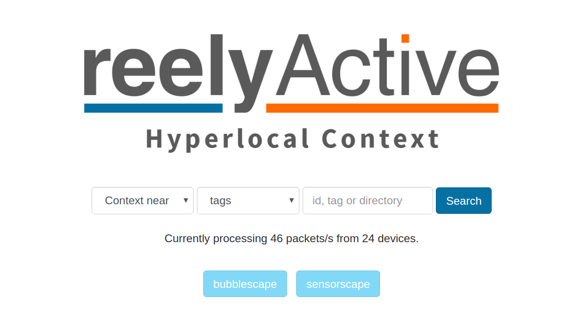
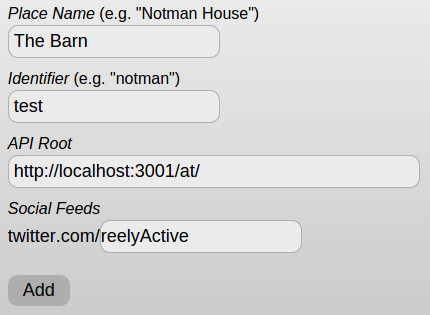

NOTICE: This tutorial applies to earlier versions of the reelyActive code base. We do not recommend following this tutorial. Current tutorials are available here.
Make a Smart Space
Here we'll present how to create a Smart Space that you can visualise in a web browser like this. All you'll need is two of our free software packages and (optionally) some of our hardware. The image below highlights the reelyActive smartspaces stack.

In a nutshell, you'll install and run smartspaces and hlc-server on a server (for instance your personal computer). If you have reelyActive hardware we'll connect that too. A few simple configurations and you have a live Smart Space!
Installing Node.js
If you don't already have Node.js installed, be sure to do so first! Installation is easy on all platforms.
Installing smartspaces
The easy way is via npm. Create a new directory called smartspaces, then from that directory run:
npm install smartspaces
Yeah, that's it, you're done!
If you prefer to install from github, instead clone the following projects:
Installing hlc-server
The easy way is via npm. From the smartspaces directory you created above, run:
npm install hlc-server
Again, that's it, you're done!
If you prefer to install from github, instead clone hlc-server.
Installing reelyActive hardware
If you have one of our starter kits, be sure to read our Install a Starter Kit tutorial. If not, don't worry, you can still test everything without any hardware.
Running everything together
In the smartspaces directory you created above, open a new file called server.js and paste in the following code:
var smartspaces = require('smartspaces'); var hlcserver = require('hlc-server'); var ui = new smartspaces(); var server = new hlcserver( { useCors: true } ); To fire up both servers, simply run:
node server.js
Did it work?
You should see the following two lines on the console:
hlc-server is listening on port 3001 smartspaces-server is listening on port 3000
Now let's test out hlc-server and then configure smartspaces.
Testing hlc-server
Open your favourite web brower and browse to localhost:3001 for the hlc-server landing page. It should look something like this:
Now let's follow the suggestion and type test in the search bar and click Search. This will take us to localhost:3001/at/test which is effectively asking the API "what is at test", where test is the name of a place. You should see the following output:
{ _meta: { message: "ok", statusCode: 200 }, _links: { self: { href: "http://localhost:3001/at/test" } }, devices: { 001bc50940100000: { identifier: { type: "EUI-64", value: "001bc50940100000" }, url: "http://reelyactive.com/metadata/test.json", href: "http://localhost:3001/id/001bc50940100000" } } } While this is a hardcoded output for test purposes, it nonetheless respects the standard format of all API responses. Effectively, what it says is that a device with identifier 001bc50940100000 is detected at the test place, and that this device is linked with metadata at reelyactive.com/metadata/test.json. The metadata link is what smartspaces will use to display information about the device.
Configuring smartspaces
Now let's configure smartspaces so that we can visualise what's at the test place. Browse to localhost:3000/manage to get started. Since this is your first time running smartspaces, you'll be prompted to choose a password. Go ahead and do this.
In the management interface, you should see the option to Add a new place. Select this option so that we can create a test place to visualise the data from hlc-server. You should see the following:
Fill in the fields as shown above. The Place Name will be displayed in the smartspaces website (we chose The Barn because we suppose that's where barn owls live, right?). The Identifier uniquely identifies the place, in our case test. The API root is the path to the API (the Identifier will be appended to this to complete the URL). And the Twitter feed will be displayed as part of the social scene.
Click the Add button. Next we'll see what's happening at The Barn!
Visiting the Smart Barn
Browse to localhost:3000/test to visit The Barn as a Smart Space. If everything went to plan, you should be rewarded with a barn owl floating in a bubble! Have fun exploring The Barn!

Yes, we also find it humourous that it says Who's here and that's the sound an owl makes.
Create Your Smart Space
Now that you've successfully run the demo, the next step is to create your own Smart Space that can receive guests other than our barn owl. To do so, you'll need a json-silo to create and store the profiles of all the guests visiting your space. Simply follow the first section of the Host a JSON Silo tutorial which will then point you back to this tutorial.
All Together Now!
Running your own Smart Space with hardware requires just a single additional line of code where we tell the server where to listen for the data stream. Your server.js file should now look like this:
var smartspaces = require('smartspaces'); var hlcserver = require('hlc-server'); var jsonsilo = require('json-silo'); var ui = new smartspaces(); var server = new hlcserver( { useCors: true } ); var silo = new jsonsilo( { useCors: true } ); server.bind( { protocol: 'udp', path: '192.168.1.101:50000' } ); Make sure that the last line of code correctly points to the source of the data stream! If you're using a starter kit, you can find all the details in the Install a Starter Kit tutorial.
What's next?
More to come soon, be sure to check back!